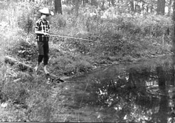
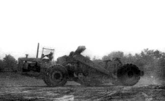
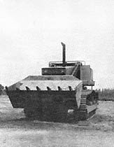
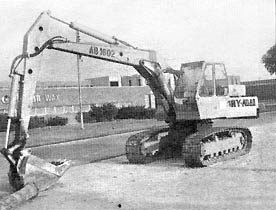
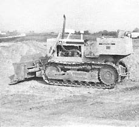
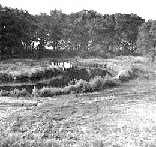
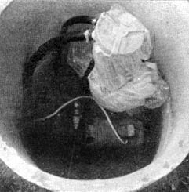
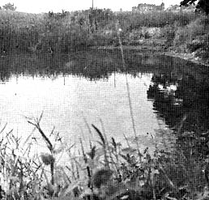
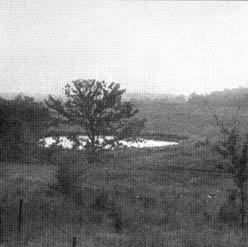

The reasons for building a homestead pond are many and varied. I originally built mine because I wanted a plentiful supply of good fish for food; I wanted the convenience of catching those fish right on my own farm; and because raising fish sounded so downright interesting. Once our two "mini-lakes" were finished, however, I found they contributed much more than fish to our life: many more animals, wild ducks and other birds now come to visit and sometimes stay on our place; the edible wild plants that grow around the moist edges of the ponds add much "free for the picking" variety to our diet; the little lakes form an extremely convenient water supply for the chickens and game birds we raise; the reservoirs give us a place to swim and practice, canoeing in the summer and are our own private skating rinks in the winter; the steady sources of water-always handy for fire department use, if necessary-cut the fire insurance premium on our house.
There are other considerations too, such as the beauty that the ponds add to our homestead . . . the satisfaction I get from just sitting on a rock and watching the fish . . . or the visiting fisherman (a ten-year-old. sage) who knows what water spiders eat, where turtles go in the winter and why a coonhound will never bark "treed" on Halloween night.
When I started my reservoirs I didn't have a water supply nor a particularly good place to build a pond. I didn't even know where to go for helpful information. Gradually, by "feeli ng" my way along, I not only successfully established our two ponds-one managed for trout and the other stocked with bass and panfish-but I learned several methods of building small lakes for very little or absolutely no money at all. I now feel that anyone with a half-acre or larger homestead-and armed with the knowledge in this article-should be able to build and maintain a successful fish pond regardless of his resources or geography.
I suppose the ideal location for a pond would be a half-acre (or larger) gulley or valley with clay soil, located on a gentle, grassy slope directly below a spring or artesian well. All a builder would have to do, in such a situation, is build an earth dam (with a spillway or drain pipe to control the water's depth) across the lower end of the depression and let it fill.
If you've got the gulley and slope but not the spring or well, you may still be in luck. As long as you have five acres drainage for each square foot of water that is six feet deep in your minilake, you can build the dam and let the rainwater runoff from the hillside fill your pond. As a matter of fact, you can get by without the galley and slope. Even if your homestead is flat as a pancake you can still have that "private fishin' and swimmin' hole" . . . by excavating.
An excavated pond is more work but it's also the most versatile (therefore, most popular) mini-lake. Such a pond can be located anywhere a source of water is available or can be made available. An excavation-instead of a dam-can even be placed in one of the gullies mentioned earlier and, so located, would probably be easier to keep full of water than a dug-out pond on level land. Most valley ponds are at least semi-excavated, as a matter of fact: the dam at the gulley's lower end being constructed, generally, of clay bulldozed out and pushed down from above.
The only minus factor (vastly overstressed in my opinion) of an excavated pond is the difficulty involved in draining such a reservoir dug into level ground. I believe, once your pond is stocked, you'll find yourself much more concerned with how to keep the water in than with how to let it out. A pond can always be speedily drained with a large pump that can be borrowed or rented if you don't have one of your own.
One of the poorest places to excavate a pond is in gravel or coarse sand. Such a bed will not hold water for any length of time and-if you're forced to establish your private lake in such soil-you'll have to seal the bed in some way.
Sand beds can be made watertight with strips of heavy black plastic laid to completely cover the pond bottom and sides. The strips should be lapped about three inches to form a seal. Consult your local plastic dealer or county agent for more information.
Sand ponds also can be sealed with clay if it's available. The sides are waterproofed by digging a narrow trench one foot deeper than the pond and three feet outside its water area. This trench, which completely surrounds the lake, is then tamped full of clay. The bottom is plugged by throwing clay into the water and keeping the mini-lake as muddy as possible by running an outboard motor or driving animals through the pond to keep the clay in suspension. The clay particles in the water that seeps through the bottom will eventually form a tight, long-lasting seal.
As you might have suspected, clay makes the best bed for a pond and-if your lake site has such subsoil (as most do) you're home free and should have no trouble holding water in the finished reservoir.
Although 3 few farm pond; sport concrete and other complicated barriers, a plain old earthen dam is-by far-the most popular "stopper" for a homestead lake. Rule of thumb says a ratio of two parts clay to one of sand makes the best structure; that the top of a dam should be at least eight feet wide: and that the slope of the sides will be three-to-one upstream and about two-to-one downstream.
A dam is not just dirt (even clay) piled up on the bottom of a gully. The "seam" where such fill lays on the original soil will be a choice place for a water leak unless a trench is dug through any top soil and down into clay to accept the first layers of fill (which should, if possible, be pure clay). Succeeding layers of the dam should be sand and clay which is both well mixed in the proper proportions and well compacted. Black top soil and/or gravel should not be used and soil mixed with tree limbs, stumps or other debris should also be avoided. As the dam settles and the wood and other trash rots-as it quickly will-holes will form in the structure and the only hole we want in our dam is-possibly-a spillway.
A spillway is a channel over, through or around a dam designed to carry excess water out of a pond or lake and-thereby-hold the maximum water level in the reservoir to a desired level. A properly designed spillway is just as important as a properly designed dam. Indeed, many good dams have heels washed out because a contractor tried to save a few dollar with a "short cut" overflow system. This is foolish because a spillway is relatively inexpensive in the first place and quite easy to lay out and build.
Many spillways are constructed of rocks cemented together to form a trench through the top of a dam. Some look like open boxes of treated wooden planks. Such a "box" spillway has both ends missing to form an inlet and outlet for the water and may have a vertical slide at the inlet end so that planks-called slash boards -can be dropped across the flow through the box to adjust the pond's level. Cranberry and rice farmers, who must adjust water levels to inches, use this slash board arrangement and their wooden spillways last as long as ten years.
A pipe, eight inches or larger in diameter, also makes a very satisfactory spillway and probably the most trouble-free idea is simply to let excess water run around the ends of the dam in a thin, slow-moving sheet. This latter arrangement only works when a dam is higher than the sides of the pond, of course. In some special cases (usually when it's built of concrete or stone) the dam itself becomes the spillway and a gravel bottom immediately downstream catches the run-over and prevents erosion.
One of the first questions you'll ask yourself, after you've picked the site for your pond, will be, "How Am I Going To Move All That Dirt?"
At the very bottom of the do-it-yourself methods is the hand shovel and wheelbarrow approach. Hundreds of dams have been built this way and hundreds more will be . . . but it's strenuous, time consuming and the finished dam should be a llowed to settle a year before it has to hold back water.
One alternative to the "Armstrong" idea is an earth moving scraper pulled behind a farm tractor. If you have or can borrow the tractor, a second-hand scraper usually can be obtained at a farm auction or from a machinery dealer. You can sometimes borrow or rent one also. Horses and mules have been used to pull these scrapers but an experienced tractor driver can move a lot more dirt with one in a day's time.
The mini-lake will go in much faster and easier, of course, if you can hire(or get free) a bulldozer or earth mover to do the job. If you do hire the construction out, however, insist that the operator be experienced and that he follow all the accepted rules of good pond design and construction.
Half my homestead is tillable and the other half is forested. At the south edge of the forested half there was a small opening in the oak and hickory trees. This clearing was about 100 feet in diameter and appeared to be almost constantly damp as the result of an underground water source. I sighted across a hand level to establish a base line for the edge of the planned pond and staked the area out. Then I started to dig by hand.
One week and four blisters later-with a grave-sized excavation to show for my efforts-I decided I had to find a new way. I wanted a pond 75 feet in diameter and 7 feet deep with sides that sloped like a bowl (to minimize cave-ins and make the mini-lake easy to seine). At the rate I was going I would be an old man before I got the pond dug. I certainly did want that homestead lake-and soon!-but I knew I couldn't afford to contract the construction out to a heavy equipment operator . . . so, by necessity, I was forced to discover that there are ways to get an excavating job done for little or no money.
I work for an equipment manufacturer who, at that time, was developing a tractor-mounted backhoe. The backhoe was in the working prototype stage and I learned that the engineer in charge of the project was looking for a place to make some unobserved tests of the machine. I quickly went to the engineer and generously offered to allow his backhoe to dig my pond. He was reluctant at first but I wore down his objections by promising to grease the machine and chase away any of my distant neighbors that showed up. Finally, the engineer agreed.
The next morning, before I left for work, the machine roared into my yard. I showed the operator the staked-out lake, told him what I wanted and left. When I returned that night, the entire pond-a big yellow bowl with mountains of dirt piled, around the edge-was dug. I bought fuel for the tractor and greased it. The following day the operator came back and spread the mounds of dirt in a gentle slope around my new lake. He was gone before I got home. My fish pond was dug. Total cost-including a box of cigars for the operator-was $9.45.
To keep the pond from washing I then seeded the edges down with a mixture of grass that the local garden store recommended. I kept the seeded earth moist for a few days and it soon turned a beautiful green, completely healing the fresh scars. The pond, situated near the bottom of a gentle slope, filled rapidly with subsurface drainage and I was ready for fish.
The excavation of my first homestead lake may seem like a lucky one-of-a-kind deal but there are dozens of companies which manufacture earth moving machinery and they have thousands of employees. I'm sure that many other folks would be able to get work done this way if they tried. And if you don't happen to work for such a firm? Well, if you don't work for a heavy equipment manufacturer there's at least one other way to get a fish pond dug "for free." I know, because I used the method to build my second pond.
After I had my first pond dug I decided I needed and could utilize a second, bigger homestead lake. The engineer's answer was "No" this time but he told me that the heavy equipment dealer in our area would rent machinery to anyone who was qualified to use it. I visited the dealer and found that his rate was fifteen dollars an hour for the machine I needed. Not so bad . . . but I couldn't operate the monster. All the estimates I got from contractors were way beyond my budget so I forgot about pond number two for a year.
Then, with the other projects around my homestead pretty well caught up, I decided to give the second pond another try. I had already selected the site (downslope from pond number one) and staked it out.
This mini-lake was to be 60 feet wide and 100 feet long. It would average about seven feet deep with the overflow running around the banks on the original earth. The potential pond was located in a clearing (in fact, it was part of our 1-1/2 acre garden) and again I wondered, "How Am I Going To Get All That Dirt Out Of There?" About then I fell in with a cheery fellow who shared my hobby of raising gamebirds and, suddenly, my problem was solved when my new friend introduced me to the "demonstration" method of getting a pond dug.
My new acquaintance, his dad and brother were in the excavating business and the very same heavy equipment dealer I had contacted was trying to sell the family a front end loading earth mover. The dealer had agreed to lend the contractors a demonstrator and operator. The operator would spend a day or so showing the family how to run the loader after which my friend, his brother and father would test the machine.
Guess where the demonstration took place? That's right: my place. More specifically, on the site of my number two pond.
We thought, in advance, that the dealer would let my friend's family use the loader for only a day or so and the contractors agreed to turn the machine over to me as soon as they had found out what they wanted to know about it. Since I knew nothing about operating heavy equipment I decided to learn all I could in the week we had before the loader was delivered.
I went to the library where I found a copy of " How To Operate Heavy Equipment " by H. L. Nichols, Jr., printed by North Castle Books, Greenwich, Connecticut. I read and reread this excellent manual until I had the principles firmly in mind then I pored over another book by the same author- "Modern Techniques Of Excavation"; printed by Colonial Press, Inc., Clinton, Massachusetts-until I thought I knew exactly what I would do when the loader arrived.
Finally the machine was here . . . and the deal turned out even better than I had expected. The dealer's operator stayed with the loader for two days. This almost took care of excavating the pond right there. My friend finished the digging in about two hours the third morning and then I climbed on and used my "book larnin" to level the piles of earth around the new little lake.
The second pond was done. It had cost me 25 cents for soft drinks.
There are still other ways to get a pond constructed for very little out-of-pocket cash. If yours is to be located at least one-half mile from human habitation, blasting is a very reasonable way to remove the dirt. It's not necessary to pay for dynamite to move all that earth either, although dynamite will be used to trigger the blast.
The main explosive element is Ammonium Nitrate saturated with fuel oil. This is the same Ammonium Nitrate farmers use for fertilizer and the fuel oil is the number two grade available at any service station. A good-sized pond can be blasted for less than ten dollars with this method. Before you try it, however, you should obtain a copy of the booklet, " Blasting Potholes For Wildlife " from the Wisconsin Department of Natural Resources, Box 450, Madison, Wisconsin 53701.
Many states have cooperative programs whereby they will share or absorb the cost of digging a fish pond. Information on this can be obtained from your county agent or local conservation agent. Most of these programs are in cooperation with the U.S. Department of the Interior.
After you have-by hook or crook-managed to get your pond excavated, your next consideration will be to get enough water to fill and keep it filled. Of course, the spring owner or pond owner with five acres or so of drainage for each six cubic feet of water will not have to concern himself with a water supply.
Right here would be a good time to mention that if your only possible homestead lake location is, say, below a bare hillside where much silt and dirt will wash into the body of water, you will do well to build a double pond. The first pond will trap the dirty mixture and let the silt settle out before the water runs into the second pond where you'll have your fish.
If your pond is located on level ground then you may have to use a well for a water supply. I use my house well which will supply the house and permit me to pump 850 gallons of water per hour to my fish ponds without affecting the well's level. Well drillers have told me that this is a good-but by no means exceptional-flow. Many wells will supply this much water.
I have my fish pond pump circuit independent of the submersible pump circuit for the house water. The entire jet pump, jet, 100 feet of hose and a large tile for a pump house cost me less than $150.00. I installed the "pond pump" by first dropping a weighted line down the well casing to find out how far down the water level was (25 feet).
I next went to a local water pump dealer and purchased a used jet pump. Then I built a pumphouse from 40-inch tile that I bought from a tile manufacturer.
I dug down around the well casing and set the tile vertically below the surface of the ground. Complete with a cement floor and a block to mount the pump on, this became a useful and easily made pumphouse. I covered the top of this house with a wishing well that doubles as a bird feeder in winter.
All that remained then was to purchase plastic pipe to connect the jet to the pump. I made the pipe 32 feet long to sink the jet five feet into the water inside the casing. The outlet froth the pump was connected with 3/4-inch plastic pipe to a waterfall at the first pond 100 feet away.
It was necessary to bury the pipe about three feet in the ground to keep the water cool while it traveled to the pond. Burying also keeps the line out of the way and out of sight. I drain the line in winter when there is no problem with evaporation or the water getting too warm for my trout.
I wired the pump through a 20 ampere fuse, primed the jet and started it up. Altogether I have 1/5 surface acre of ponds and the outlet from the trout pond is a 6-inch clay tile to the bass pond. I easily keep the water in the first fish pond below 70 degrees in summer with this pump and the overflow maintains the water level in the second tiny lake.
Two other ways I have seen for keeping ponds full are: (1) connecting the eave troughs from three large buildings into a pipe that runs into the pond, (2) digging drain tile in like spokes of a wheel that radiate out from a pond so that the tiles catch and direct most of the local drainage into the lake. This works very well if the pond will hold a considerable surplus of water for the dry season.
Any pond in any location should stay full through use of one or more of the above methods. All that remains then is to stock it with fish.
Getting fish is simple if you have a large pond. Just contact your county agent and he'll make arrangements for the Department of Interior, in cooperation with your local conservation department, to deliver fish to you. This service is free but the fish have to be ordered before May 1st.
If-like mine-your ponds are small, then getting fish is more complicated. In my state, you cannot legally buy fish and stock them in a small pond without a license. After consulting with personnel from the fisheries division of the Wisconsin Department of Natural Resources, however, I learned two almost unknown but very important points of the law.
Trout can legally be bought from a licensed hatchery and stocked without a license and other fish can be bought from hatcheries or caught from public waters for restocking if you possess a class C hatchery license. A class C license costs $5.00. Many states have no regulations against restocking native fish so it may be possible for you to get your brood stock by fishing public waters.
Trout, channel catfish and some other fish will not reproduce in many ponds so it is mandatory to have a source of supply for them. I buy my trout from Rushing Waters Trout Farm at Palmyra, Wisconsin and my bass and bluegills are good native Wisconsin stock.
Trout must have water that contains plenty of oxygen and is kept below 70 degrees. The rainbow trout I've raised feed and gain best with water temperature kept between 65 and 70 degrees. I avoid crowding the rainbows and raise only 100 at a time in my 75 foot diameter pond although I could raise many more trout by installing a system to aerate or churn the water. I artificially feed the trout a little but they don't eat much: they seem able to forage most of their food.
I have upwards of 100 adult largemouth bass in my other pond and hundreds of bluegills. I cleaned out the bluegills last fall and now-as I write this in August-I have an estimated 500 "eatin' size" bluegills to catch again this year. The bass have spawned also so I'll take out some of the larger adults.
It's very easy to get so many fish in a pond that they all stop growing and I feed the fish in the bass pond the same feed that the trout get: a product called Trout Chow sold in floating pellet form by a large farm feed company. It is very gratifying to see the bluegills feed and grow like they do. I suspect more pounds of meat could be raised from bluegills than from any other fish.
F isheries personnel have a term for carefully fed and maintained ponds. They call it "intensive management" as opposed to minimum management where you just throw in a certain number of fish, fertilize the water and forget about it except for catching what you want.
I've planted cattails in one pond and wild rice in the other. Each has done well and I regularly use both cattails and wild rice for food. Once in awhile a muskrat will come and forage among these plants and I'm glad to see his raft like feed beds and to know that I've established a place to his liking.
If the 'rat becomes a nuisance I'll just string a light bulb out to the pond and let it burn all night. This will bother him into leaving. Incidently this is a good way to attract insects for fish food, too. Hang the bulb just over the water and many insects will fall in to be devoured by the fish that are also attracted to the light.
Now and again a mink will come for a visit and I'll see his cat-like tracks in the mud at the water's edge . . . and maybe the uneaten tail of a fish lying nearby. The mink is such a wild and independent creature that just knowing they have been by cheers me. If they become too much of a nuisance I'll trap them during the fall when their pelts are prime and worth the skinning.
When winter comes and locks the land the problem of water evaporation disappears but a thick layer of ice on a small pond can create another trouble: oxygen starvation. This develops when the water is isolated from the air and the oxygen-producing algae is shaded from sunlight for long periods. The problem is especially acute if snow covers the ice. In ponds with a high fish population and no incoming water it will usually be necessary to use one of the following methods to keep the fish from using up all the oxygen in the water and dying.
The first idea I tried was churning the water with an outboard motor about once a week. I set the motor low enough on its stand so that it could be placed through a hole in the ice and submerged in the water about a foot. The action is terrific when you start up the outboard. It will draw the water up through the hole in the ice like a pump. I can almost completely erase the ice from my small pond this way-in about a half hour. It works well but I usually wind up getting wet before the session is over.
Looking around for an improvement I decided to try a small electric-motor powered air compressor. I bought a used compressor for $5.00, attached about 30 feet of hose, cut a hole in the ice, dropped the hose in and started the compressor. This works very well. It saturates the water with oxygen while at the same time circulating the water to open a hole in the ice. This, of course, brings the water in contact with the atmosphere where it picks up more oxygen. I still use this rig and have yet to lose a fish from oxygen starvation.
A large (the largest) mailorder, retail store chain lists a windmill in its farm catalog that will keep a hole in the ice open all winter for livestock watering. I can see no reason why this wouldn't keep a fish pond aerated also.
When you have your fish pond operating well, don't overlook its money-making possibilities.
One good bet is raising bait fishes or minnows. If you decide to try this a good publication to have is Raising Bait Fishes, distributed by the Fish and Wildlife Service, Department of the Interior, Washington, D.C. 20240. This little booklet contains a lot of good pond-building information also. Three-inch minnows in my area right now are selling for $3.00 a pound (wholesale) and, according to Raising Bait Fishes, 3000 pounds of minnows can be raised per acre per year.
There's also a ready market for trout and other fish. In my area the "pay ponds" charge so much per pound for the fish that fishermen catch from them. These ponds appear to do well.
One interesting sideline we have is trading fish to our neighbors for beef or pork. The neighbors think that they're getting the best of the bargain.
A fish pond can enrich life on your homestead in many ways. Just remember, before you start, to write your state conservation department for all the pertinent publications they have. Contact your county agent for further information and write the Department of Interior, Bureau of Sport Fisheries and ask for their list of publications. Read them all, then go talk to as many pond operators as you can. Read and reread this article and, frankly, I don't see how you can go wrong. If I can help just drop me a line (please include a stamped envelope) in care of MOTHER.
|
 Heavy earth scraper. |
 Front end loader. |
 Backhoe |
|
 Bulldozer |
 Leveled pond banks. |
 Close up of pump with plastic pipe leading down well casing to jet. |
|
 Grass is left long so wild aimals and birds can approach the pong under cover. |
 An ideal pond location. The surrounding fields drain in and it has its own spring. |
 |